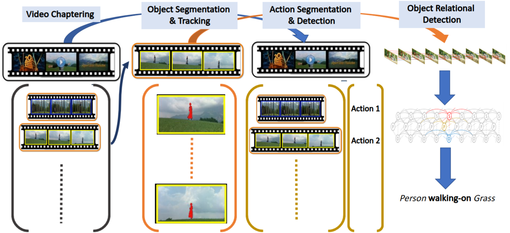

The analysis and extraction of meaningful information from video data is a vital application of machine learning, particularly given the explosion of video being produced, uploaded, transmitted, and stored worldwide.
Machine learning and, more recently, deep learning methods have shown outstanding success in identifying objects in still images, whether as face recognition, texture classification, or even the recognition of every-day objects in cluttered environments.
However these methods typically do not generalize well to video, where our proposed research focuses on two challenges:
- Object locations, shape, and interactions are much more complex over time than within a single image. We wish to infer which objects are of greatest significance, and how multiple objects in a scene interact with one another over time -- for example whether a hat is on a person's head (interacting), or on a shelf in the background (non-interacting).
- The overwhelming majority of video data is not annotated in any way, so our goal is to push the state-of-the-art in machine learning given semi-supervised data (few annotations) or fully un-supervised data (no annotations).

More...